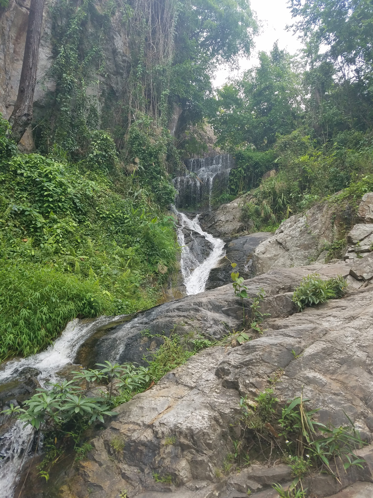
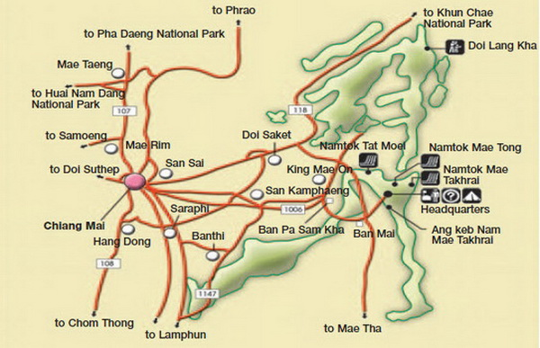

Chiang Mai has dozens of hidden waterfalls, big and small, beautiful and sticky(?)!What better way to cool off in the northern Thai sun than by getting misted by a drizzling waterfall?
With so many natural waterfalls to choose from in the surrounding area of Chiang Mai, you don’t have to head to all the way to the beaches of southern Thailand to go for a swim. Whether you want to hike, swim, picnic, or lounge around with a book, you can count on having the sound of running water as your backdrop on a hot day near Chiang Mai. So grab your swimsuit, camera and a picnic and get ready to play in one of northern Thailand’s magical waterfalls.
Bua Tong Waterfall
Have you ever climbed up a waterfall while the current was coming down on you? The amazing ability to climb over wet rocks is what makes the “sticky waterfall” so unique. You can get a mix of a workout on top of some leisure all in one go. It’s the perfect playground for anyone wanting to see a different kind of waterfall. While it’s not fully understood, the limestone rocks give you a “sticky” grip which allows you to climb right on up. If climbing a waterfall sounds too intense for you, bring a book and have a picnic since there’s plenty of local food nearby. The Bua Tong Waterfall is a bit over an hour north of Chiang Mai, so you can see the views of northern Thailand from your motorbike, songthaew, or tuk-tuk.

Huay Kaew Waterfall
If you’re looking for close and convenient, stroll on over to the waterfall located nearest to Chiang Mai at the foot of Doi Suthep. It’s only about a fifteen-minute drive northwest of the old city. Located just past the Chiang Mai Zoo, it takes little effort to get to. Bring a picnic and lounge on the grass, dip your feet in the pools, and choose to hike further up if you wish for great views of Chiang Mai. Huay Kaew Waterfall is a perfect sight for anyone pressed for time or if you wish to only be away from the city for part of the day.

Monthathan Waterfall
Just a ten minute drive further up the road from Huey Kaew Waterfall is the Monthathan Waterfall. If you continue on highway 1004, you will find a sharp right turn that will lead the way. This waterfall is a bit bigger and more swimmable than the Huey Kaew Waterfall. With nine tiers of waterfalls, you can find yourself spending the majority of the day here cooling off, relaxing, and exploring the different layers of the waterfall.
Mae Sa Waterfall
Known to be one of the more beautiful waterfalls in northern Thailand is the Mae Sa Waterfall. You can easily get there by motorbike in under an hour. This waterfall is a great spot to relax for the day while swimming, picnicking, and climbing many of its tiers. Although it can get crowded, you’ll have a chance to hop into the ten different pools, take pictures from different viewpoints, and feel as if you had seen ten waterfalls rather than just one. Much bigger than many surrounding waterfalls, you’ll have a chance to plunge into Thai nature with local Thai families picnicking nearby.
Mae Takhrai Waterfall
If you’re feeling that you want a little bit of a hike then head on over to Mae Takhrai National Park. From the National Park office, you can hike six kilometres toward the waterfall while trekking through the lush jungles filled with colourful wildflowers. You can treat yourself at the end of your hike by jumping into the pool at the base of the waterfall. The Mae Takhrai National Park also allows camping in the rainforest if you are feeling that you need a day or two away from the city.

Whether you are looking for somewhere to just relax and read in the shade or somewhere to dive into a pool, you can have it! Chiang Mai is surrounded by national parks on all sides. All of them encapsulate the beauty of northern Thailand and you are sure to see it all firsthand when you explore a nearby waterfall. So beat the heat and cool off in a refreshing waterfall near Chiang Mai.
Written by Lauren Kubik
“Lauren is currently living in Chiang Mai while working as a director for a jewelry brand and as a freelance writer. Well travelled, a few of her favorite adventures were studying abroad in Paris, teaching English in South Korea and volunteering in Ukraine. She loves learning about new places and is crazy about the outdoors. She was drawn to northern Thailand for the slower paced life, tropical weather, friendly and outdoorsy atmosphere, and the mango shakes.”